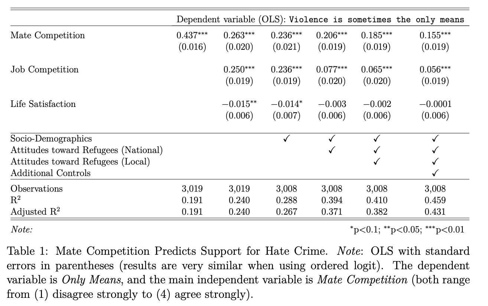
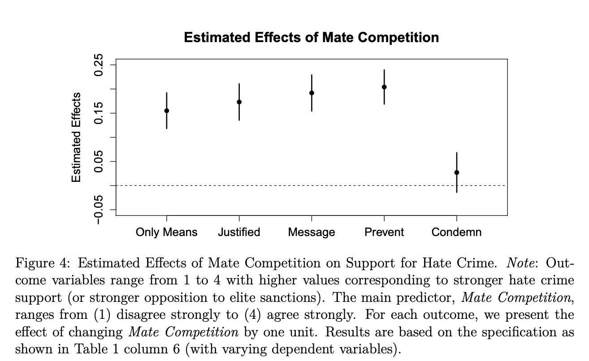

4.8 Week 2 Thursday Example
This example is based on Dancygier, Rafaela; Egami, Naoki; Jamal, Amaney; Rischke, Ramona, 2020, “Hate Crimes and Gender Imbalances: Fears over Mate Competition and Violence against Refugees”, published in the American Journal of Political Science. Replication data is available here. We will draw on the survey portion of the article and replicate Table 1 in the paper. The pre-print is available here.
The abstract is: As the number of refugees rises across the world, anti-refugee violence has become a pressing concern. What explains the incidence and support of such hate crime? We argue that fears among native men that refugees pose a threat in the competition for female partners is a critical but understudied factor driving hate crime. Employing a comprehensive dataset on the incidence of hate crime across Germany, we first demonstrate that hate crime rises where men face disadvantages in local mating markets. Next, we complement this ecological evidence with original survey measures and confirm that individual-level support for hate crime increases when men fear that the inflow of refugees makes it more difficult to find female partners. Mate competition concerns remain a robust predictor even when controlling for antirefugee views, perceived job competition, general frustration, and aggressiveness. We conclude that a more complete understanding of hate crime and immigrant conflict must incorporate marriage markets and mate competition.
The authors summarize their hypotheses as, “the notion that male refugees are engaged in romantic relationships with German women has received considerable media attention from a variety of sources, with coverage ranging from the curious to the outright hostile. We argue that the prospect of refugee-native mate competition can trigger or compound resentment against refugees, including support for hate crime” pg. 14
library(foreign)
dat_use <- read.dta("https://github.com/ktmccabe/teachingdata/blob/main/dat_use.dta?raw=true")The data include wave 4 of an online survey fielded in Germany through Respondi from September 2016 to December 2017). Each wave was designed to be nationally representative on age (starting at 18), gender, and state (Bundesland) with a sample of about 3,000 respondents in each wave.
Key variables include
hate_violence_meansrepresenting respondents’ agreement or disagreement to the Only Means question: “When it comes to the refugee problem, violence is sometimes the only means that citizens have to get the attention of German politicians.” from (1) disagree strongly to (4) agree strongly.MateComp_cont, Mate Competition. “The inflow of refugees makes it more difficult for native men to find female partners.” from (1) disagree strongly to (4) agree strongly.- The data include several other variables related to the demographics of the respondents and measures representing potential alternative explanations, such as
JobComp_cont(agreement with “the inflow of young male refugees makes it more difficult for young native men to find apprenticeships and jobs”) andLifeSatis_cont(0-10 scale, ranging from extremely dissatisfied to extremely satisfied).
Let’s pause here to ask a few questions about research design.
- What is the outcome? What is the independent variable of interest?
- How would we write out the bivariate regression model?
- Why OLS? (e.g., why not experiment?)
- What types of alternative explanations might exist?
Ok let’s move to replication of the first two regression models in the table:

Try to code these on your own, then click for the solution
lm1 <- lm(hate_violence_means ~ MateComp_cont, data=dat_use)
lm2 <- lm(hate_violence_means ~ MateComp_cont + JobComp_cont + LifeSatis_cont, data=dat_use)Now, let’s compare the summary output of each output.
Try on your own, then click for the solution
summary(lm1)
Call:
lm(formula = hate_violence_means ~ MateComp_cont, data = dat_use)
Residuals:
Min 1Q Median 3Q Max
-1.6804 -0.3694 -0.3694 0.6306 2.6306
Coefficients:
Estimate Std. Error t value Pr(>|t|)
(Intercept) 0.93235 0.03302 28.24 <2e-16 ***
MateComp_cont 0.43702 0.01635 26.73 <2e-16 ***
---
Signif. codes: 0 '***' 0.001 '**' 0.01 '*' 0.05 '.' 0.1 ' ' 1
Residual standard error: 0.7993 on 3017 degrees of freedom
Multiple R-squared: 0.1915, Adjusted R-squared: 0.1912
F-statistic: 714.6 on 1 and 3017 DF, p-value: < 2.2e-16summary(lm2)
Call:
lm(formula = hate_violence_means ~ MateComp_cont + JobComp_cont +
LifeSatis_cont, data = dat_use)
Residuals:
Min 1Q Median 3Q Max
-1.8275 -0.4783 -0.1842 0.3171 2.8452
Coefficients:
Estimate Std. Error t value Pr(>|t|)
(Intercept) 0.788623 0.057849 13.63 <2e-16 ***
MateComp_cont 0.263437 0.020261 13.00 <2e-16 ***
JobComp_cont 0.249956 0.018672 13.39 <2e-16 ***
LifeSatis_cont -0.014725 0.006292 -2.34 0.0193 *
---
Signif. codes: 0 '***' 0.001 '**' 0.01 '*' 0.05 '.' 0.1 ' ' 1
Residual standard error: 0.7751 on 3015 degrees of freedom
Multiple R-squared: 0.2403, Adjusted R-squared: 0.2395
F-statistic: 317.9 on 3 and 3015 DF, p-value: < 2.2e-16Questions about the output
- How should we interpret the coefficients?
- Do they support the researchers’ hypotheses?
- How would we extract confidence intervals from the coefficients?
- How should we interpret the goodness of fit statistics at the bottom of the output?
Additional Models We can also run regressions with even more covariates, as the authors do in models 3-6 in the paper.
Click to reveal regression code below.
lm3 <- lm(hate_violence_means ~ MateComp_cont + JobComp_cont + LifeSatis_cont +
factor(age_group) + # age group
factor(gender) + # gender
factor(state) + # state
factor(citizenship) + # german citizen
factor(marital) + # marital status
factor(religion) + # religious affiliation
eduyrs + # education
factor(occupation) + # main activity
factor(income) + # income
factor(household_size) + # household size
factor(self_econ), # subjective social status
data=dat_use)
lm4 <- lm(hate_violence_means ~ MateComp_cont + JobComp_cont + LifeSatis_cont +
factor(age_group) + # age group
factor(gender) + # gender
factor(state) + # state
factor(citizenship) + # german citizen
factor(marital) + # marital status
factor(religion) + # religious affiliation
eduyrs + # education
factor(occupation) + # main activity
factor(income) + # income
factor(household_size) + # household size
factor(self_econ) + # subjective social status
factor(ref_integrating) + # Refugee Index (National-level; Q73) 8 in total
factor(ref_citizenship) + factor(ref_reduce) + factor(ref_moredone) + factor(ref_cultgiveup) +
factor(ref_economy) + factor(ref_crime) + factor(ref_terror),
data=dat_use)
lm5 <- lm(hate_violence_means ~ MateComp_cont + JobComp_cont + LifeSatis_cont +
factor(age_group) + # age group
factor(gender) + # gender
factor(state) + # state
factor(citizenship) + # german citizen
factor(marital) + # marital status
factor(religion) + # religious affiliation
eduyrs + # education
factor(occupation) + # main activity
factor(income) + # income
factor(household_size) + # household size
factor(self_econ) + # subjective social status
factor(ref_integrating) + # Refugee Index (National-level; Q73) 8 in total
factor(ref_citizenship) + factor(ref_reduce) + factor(ref_moredone) + factor(ref_cultgiveup) +
factor(ref_economy) + factor(ref_crime) + factor(ref_terror) +
factor(ref_loc_services) + # Refugee Index (Local, Q75)
factor(ref_loc_economy) + factor(ref_loc_crime) + factor(ref_loc_culture) + factor(ref_loc_islam) +
factor(ref_loc_schools) + factor(ref_loc_housing) + factor(ref_loc_wayoflife), ## end
data=dat_use)
formula.5 <-
as.character("hate_violence_means ~ MateComp_cont + JobComp_cont +
LifeSatis_cont + factor(age_group) + factor(gender) +
factor(state) + factor(citizenship) + factor(marital) +
factor(religion) + eduyrs + factor(occupation) +
factor(income) + factor(household_size) + factor(self_econ) +
factor(ref_integrating) + factor(ref_citizenship) + factor(ref_reduce) +
factor(ref_moredone) + factor(ref_cultgiveup) +
factor(ref_economy) + factor(ref_crime) + factor(ref_terror) +
factor(ref_loc_services) + factor(ref_loc_economy) + factor(ref_loc_crime) +
factor(ref_loc_culture) + factor(ref_loc_islam) +
factor(ref_loc_schools) + factor(ref_loc_housing) + factor(ref_loc_wayoflife)")
formula.6 <- paste(formula.5, "factor(distance_ref) + factor(settle_ref)",
"lrscale + afd + muslim_ind + afd_ind + contact_ind",
sep="+", collapse="+")
lm6 <- lm(as.formula(formula.6), data=dat_use)| Model 1 | Model 2 | Model 3 | Model 4 | Model 5 | Model 6 | |
|---|---|---|---|---|---|---|
| (Intercept) | 0.9323*** | 0.7886*** | 1.3982*** | 1.4437*** | 1.4372*** | 1.3878*** |
| (0.0330) | (0.0578) | (0.2293) | (0.2296) | (0.2388) | (0.2372) | |
| MateComp_cont | 0.4370*** | 0.2634*** | 0.2361*** | 0.2064*** | 0.1848*** | 0.1550*** |
| (0.0163) | (0.0203) | (0.0206) | (0.0194) | (0.0195) | (0.0189) | |
| JobComp_cont | 0.2500*** | 0.2358*** | 0.0772*** | 0.0650*** | 0.0559*** | |
| (0.0187) | (0.0189) | (0.0195) | (0.0196) | (0.0189) | ||
| LifeSatis_cont | -0.0147** | -0.0136* | -0.0034 | -0.0020 | -0.0001 | |
| (0.0063) | (0.0070) | (0.0065) | (0.0065) | (0.0062) | ||
| factor(age_group)30-39 | -0.1323** | -0.1800*** | -0.1821*** | -0.1957*** | ||
| (0.0525) | (0.0489) | (0.0488) | (0.0471) | |||
| factor(age_group)40-49 | -0.2088*** | -0.2771*** | -0.2709*** | -0.2808*** | ||
| (0.0525) | (0.0490) | (0.0490) | (0.0474) | |||
| factor(age_group)50-59 | -0.2876*** | -0.3621*** | -0.3480*** | -0.3580*** | ||
| (0.0535) | (0.0501) | (0.0502) | (0.0486) | |||
| factor(age_group)60 and older | -0.3362*** | -0.3427*** | -0.3199*** | -0.3073*** | ||
| (0.0678) | (0.0631) | (0.0631) | (0.0610) | |||
| factor(gender)Female | -0.0247 | -0.0528* | -0.0451 | -0.0233 | ||
| (0.0299) | (0.0281) | (0.0282) | (0.0272) | |||
| factor(state)Bayern | 0.0097 | -0.0168 | -0.0148 | -0.0229 | ||
| (0.0531) | (0.0494) | (0.0491) | (0.0474) | |||
| factor(state)Berlin | 0.0106 | -0.0023 | -0.0259 | 0.0037 | ||
| (0.0776) | (0.0722) | (0.0720) | (0.0706) | |||
| factor(state)Brandenburg | -0.1572* | -0.1023 | -0.0949 | -0.1082 | ||
| (0.0896) | (0.0833) | (0.0834) | (0.0805) | |||
| factor(state)Bremen | -0.1266 | -0.1252 | -0.1750 | -0.0508 | ||
| (0.1531) | (0.1423) | (0.1415) | (0.1365) | |||
| factor(state)Hamburg | -0.0208 | -0.0140 | -0.0255 | -0.0269 | ||
| (0.1016) | (0.0946) | (0.0941) | (0.0914) | |||
| factor(state)Hessen | -0.1207* | -0.0931 | -0.0766 | -0.0853 | ||
| (0.0647) | (0.0604) | (0.0601) | (0.0578) | |||
| factor(state)Mecklenburg-Vorpommern | -0.0849 | -0.1008 | -0.1015 | -0.1572* | ||
| (0.1035) | (0.0961) | (0.0959) | (0.0928) | |||
| factor(state)Niedersachsen | -0.0993 | -0.1052* | -0.1055* | -0.1190** | ||
| (0.0607) | (0.0564) | (0.0561) | (0.0543) | |||
| factor(state)Nordrhein-Westfalen | -0.0299 | -0.0277 | -0.0414 | -0.0414 | ||
| (0.0501) | (0.0465) | (0.0465) | (0.0450) | |||
| factor(state)Rheinland-Pfalz | -0.1178 | -0.1137 | -0.1089 | -0.1407** | ||
| (0.0750) | (0.0700) | (0.0697) | (0.0675) | |||
| factor(state)Saarland | -0.0264 | 0.0227 | 0.0353 | -0.0250 | ||
| (0.1293) | (0.1203) | (0.1199) | (0.1162) | |||
| factor(state)Sachsen | -0.0357 | -0.0813 | -0.1118 | -0.1470** | ||
| (0.0734) | (0.0683) | (0.0684) | (0.0662) | |||
| factor(state)Sachsen-Anhalt | -0.0193 | -0.0811 | -0.0765 | -0.1024 | ||
| (0.0927) | (0.0862) | (0.0863) | (0.0836) | |||
| factor(state)Schleswig-Holstein | -0.2402*** | -0.1693** | -0.1725** | -0.1839** | ||
| (0.0862) | (0.0806) | (0.0802) | (0.0773) | |||
|
factor(state)Th |
0.0090 | -0.0076 | -0.0081 | -0.0654 | ||
| (0.0957) | (0.0889) | (0.0887) | (0.0858) | |||
| factor(citizenship)1 | -0.0621 | -0.0831 | -0.0739 | -0.0314 | ||
| (0.1064) | (0.0990) | (0.0983) | (0.0946) | |||
| factor(marital)With partner, not living together | 0.0825 | 0.0323 | 0.0145 | 0.0099 | ||
| (0.0572) | (0.0532) | (0.0529) | (0.0509) | |||
| factor(marital)With partner, living together | 0.0968* | 0.0570 | 0.0582 | 0.0342 | ||
| (0.0562) | (0.0524) | (0.0521) | (0.0501) | |||
| factor(marital)Married | 0.0884 | 0.0487 | 0.0509 | 0.0165 | ||
| (0.0538) | (0.0500) | (0.0497) | (0.0479) | |||
| factor(marital)Registered partnership | 0.0982 | 0.1345 | 0.1601 | 0.1976 | ||
| (0.1880) | (0.1753) | (0.1744) | (0.1679) | |||
| factor(marital)Divorced / separated | 0.1150* | 0.0938 | 0.0853 | 0.0877 | ||
| (0.0616) | (0.0573) | (0.0569) | (0.0549) | |||
| factor(marital)Widowed | 0.1612* | 0.1556* | 0.1309 | 0.1243 | ||
| (0.0920) | (0.0855) | (0.0855) | (0.0824) | |||
| factor(religion)Roman Catholic | -0.0034 | -0.0300 | -0.0333 | -0.0713* | ||
| (0.0407) | (0.0378) | (0.0377) | (0.0364) | |||
| factor(religion)Protestant | -0.0640* | -0.0396 | -0.0249 | -0.0556* | ||
| (0.0375) | (0.0348) | (0.0349) | (0.0337) | |||
| factor(religion)Protestant Free Church | -0.0225 | -0.0240 | -0.0170 | -0.0780 | ||
| (0.1022) | (0.0951) | (0.0945) | (0.0911) | |||
| factor(religion)Other Protestant | 0.7822** | 0.9286*** | 0.9234*** | 0.8768** | ||
| (0.3855) | (0.3587) | (0.3565) | (0.3441) | |||
| factor(religion)Eastern Orthodox | 0.2751 | 0.1666 | 0.1350 | 0.1455 | ||
| (0.1869) | (0.1744) | (0.1735) | (0.1672) | |||
| factor(religion)Other Christian | -0.0119 | 0.0406 | 0.0645 | 0.0954 | ||
| (0.1633) | (0.1518) | (0.1514) | (0.1458) | |||
| factor(religion)Jewish | 0.0827 | -0.1329 | -0.0855 | -0.2074 | ||
| (0.3460) | (0.3217) | (0.3202) | (0.3081) | |||
| factor(religion)Muslim | -0.0578 | 0.0586 | 0.0046 | 0.0906 | ||
| (0.1667) | (0.1554) | (0.1549) | (0.1509) | |||
| factor(religion)Eastern religion (Buddhism, Hinduism, Sikhism, Shinto, Tao, etc.) | -0.0026 | 0.0043 | 0.0289 | 0.0138 | ||
| (0.1215) | (0.1130) | (0.1129) | (0.1086) | |||
| factor(religion)Other non-Christian religion | 0.3904* | 0.4759** | 0.4412** | 0.2675 | ||
| (0.2333) | (0.2175) | (0.2168) | (0.2089) | |||
| factor(religion)Christian, but not close to a particular religious community | -0.0270 | 0.0102 | 0.0083 | -0.0177 | ||
| (0.0611) | (0.0567) | (0.0566) | (0.0544) | |||
| factor(religion)No answer | 0.1273 | 0.2257** | 0.2106** | 0.1926* | ||
| (0.1116) | (0.1039) | (0.1036) | (0.0999) | |||
| eduyrs | -0.0179*** | -0.0139*** | -0.0121*** | -0.0088** | ||
| (0.0042) | (0.0039) | (0.0039) | (0.0038) | |||
| factor(occupation)Parental leave | 0.1940 | 0.1368 | 0.1319 | 0.1606 | ||
| (0.1589) | (0.1478) | (0.1473) | (0.1417) | |||
| factor(occupation)In schooling / vocational training, student | -0.0690 | -0.1196 | -0.1279 | -0.1244 | ||
| (0.0926) | (0.0862) | (0.0859) | (0.0828) | |||
| factor(occupation)Unemployed / seeking work | 0.0088 | -0.0339 | -0.0420 | -0.0451 | ||
| (0.1080) | (0.1004) | (0.0999) | (0.0961) | |||
| factor(occupation)Retired | 0.1055 | 0.0493 | 0.0470 | 0.0298 | ||
| (0.0816) | (0.0758) | (0.0755) | (0.0726) | |||
| factor(occupation)Permanently sick or disabled | -0.1574 | -0.1490 | -0.1458 | -0.1507 | ||
| (0.1287) | (0.1198) | (0.1194) | (0.1149) | |||
| factor(occupation)Unskilled worker | 0.1800* | 0.0893 | 0.0642 | 0.0221 | ||
| (0.0934) | (0.0870) | (0.0865) | (0.0833) | |||
| factor(occupation)Skilled worker | 0.2026** | 0.1379* | 0.1393* | 0.1073 | ||
| (0.0871) | (0.0812) | (0.0808) | (0.0778) | |||
| factor(occupation)Employee in low / medium position | 0.1065 | 0.0560 | 0.0524 | 0.0653 | ||
| (0.0740) | (0.0688) | (0.0685) | (0.0659) | |||
| factor(occupation)Employee in high position | 0.0536 | -0.0116 | -0.0165 | -0.0292 | ||
| (0.0824) | (0.0766) | (0.0763) | (0.0735) | |||
| factor(occupation)Civil servant | -0.0009 | -0.1061 | -0.1342 | -0.1687 | ||
| (0.1307) | (0.1214) | (0.1209) | (0.1166) | |||
| factor(occupation)Senior civil servant | 0.0173 | 0.0085 | 0.0262 | -0.0256 | ||
| (0.1481) | (0.1380) | (0.1372) | (0.1325) | |||
| factor(occupation)Senior civil servant <96> highest level | -0.0083 | -0.1016 | -0.0793 | -0.0611 | ||
| (0.1262) | (0.1174) | (0.1169) | (0.1127) | |||
| factor(occupation)Self-employed / freelancer | 0.1171 | 0.0323 | 0.0396 | 0.0693 | ||
| (0.0889) | (0.0828) | (0.0824) | (0.0794) | |||
| factor(occupation)Other | 0.2269 | 0.0467 | 0.0232 | 0.0080 | ||
| (0.1724) | (0.1607) | (0.1601) | (0.1540) | |||
| factor(income)500 to below 1,000 <80> | 0.0260 | 0.0768 | 0.0750 | -0.0028 | ||
| (0.1024) | (0.0953) | (0.0948) | (0.0914) | |||
| factor(income)1,000 to below 1,500 <80> | 0.0677 | 0.0714 | 0.0642 | -0.0274 | ||
| (0.1011) | (0.0943) | (0.0937) | (0.0904) | |||
| factor(income)1,500 to below 2,000 <80> | 0.1360 | 0.1289 | 0.1319 | 0.0564 | ||
| (0.1024) | (0.0955) | (0.0949) | (0.0914) | |||
| factor(income)2,000 to below 2,500 <80> | 0.1320 | 0.1155 | 0.1146 | 0.0028 | ||
| (0.1045) | (0.0974) | (0.0969) | (0.0935) | |||
| factor(income)2,500 to below 3,000 <80> | 0.0479 | 0.0606 | 0.0615 | -0.0466 | ||
| (0.1071) | (0.0998) | (0.0992) | (0.0956) | |||
| factor(income)3,000 to below 3,500 <80> | 0.1659 | 0.1531 | 0.1557 | 0.0384 | ||
| (0.1108) | (0.1031) | (0.1025) | (0.0989) | |||
| factor(income)3,500 to below 4,000 <80> | 0.2256** | 0.2133** | 0.2101** | 0.0785 | ||
| (0.1138) | (0.1059) | (0.1054) | (0.1017) | |||
| factor(income)4,000 to below 4,500 <80> | 0.0770 | 0.0396 | 0.0271 | -0.0996 | ||
| (0.1211) | (0.1127) | (0.1121) | (0.1081) | |||
| factor(income)4,500 to below 5,000 <80> | 0.2446* | 0.1782 | 0.1755 | 0.0431 | ||
| (0.1274) | (0.1188) | (0.1182) | (0.1140) | |||
| factor(income)5,000 or more <80> | 0.2017 | 0.1350 | 0.1128 | 0.0250 | ||
| (0.1227) | (0.1143) | (0.1136) | (0.1095) | |||
| factor(income)No answer | 0.0325 | 0.0498 | 0.0501 | -0.0453 | ||
| (0.1062) | (0.0990) | (0.0984) | (0.0949) | |||
| factor(household_size)2 | 0.0362 | 0.0390 | 0.0316 | 0.0617 | ||
| (0.0511) | (0.0475) | (0.0473) | (0.0457) | |||
| factor(household_size)3 | 0.0404 | 0.0374 | 0.0403 | 0.0675 | ||
| (0.0574) | (0.0535) | (0.0533) | (0.0515) | |||
| factor(household_size)4 | 0.0289 | 0.0129 | 0.0114 | 0.0516 | ||
| (0.0647) | (0.0602) | (0.0599) | (0.0578) | |||
| factor(household_size)5 | 0.0161 | 0.0255 | 0.0347 | 0.0345 | ||
| (0.1046) | (0.0972) | (0.0968) | (0.0934) | |||
| factor(household_size)6 | 0.3162* | 0.3629** | 0.4030** | 0.3646** | ||
| (0.1793) | (0.1666) | (0.1658) | (0.1599) | |||
| factor(household_size)7 | 0.0387 | 0.0311 | 0.0495 | -0.0145 | ||
| (0.3181) | (0.2957) | (0.2939) | (0.2838) | |||
| factor(household_size)8 | 0.7654** | 0.9534*** | 0.8352** | 0.7004** | ||
| (0.3876) | (0.3615) | (0.3615) | (0.3479) | |||
| factor(household_size)12 | -0.0289 | 0.0946 | -0.0435 | -0.1011 | ||
| (0.7761) | (0.7217) | (0.7188) | (0.6915) | |||
| factor(self_econ)2 | -0.0271 | -0.1166 | -0.1141 | -0.0368 | ||
| (0.1629) | (0.1517) | (0.1511) | (0.1457) | |||
| factor(self_econ)3 | -0.2019 | -0.2069 | -0.2058 | -0.1859 | ||
| (0.1513) | (0.1408) | (0.1405) | (0.1353) | |||
| factor(self_econ)4 | -0.1501 | -0.1394 | -0.1358 | -0.1343 | ||
| (0.1510) | (0.1405) | (0.1403) | (0.1351) | |||
| factor(self_econ)5 | -0.2279 | -0.1700 | -0.1705 | -0.1569 | ||
| (0.1491) | (0.1389) | (0.1386) | (0.1335) | |||
| factor(self_econ)6 | -0.2812* | -0.2191 | -0.2186 | -0.2051 | ||
| (0.1503) | (0.1400) | (0.1397) | (0.1345) | |||
| factor(self_econ)7 | -0.3444** | -0.2527* | -0.2484* | -0.2383* | ||
| (0.1518) | (0.1415) | (0.1414) | (0.1360) | |||
| factor(self_econ)8 | -0.2107 | -0.1598 | -0.1765 | -0.1973 | ||
| (0.1573) | (0.1466) | (0.1462) | (0.1407) | |||
| factor(self_econ)9 | -0.1747 | -0.0476 | -0.0684 | -0.0658 | ||
| (0.1933) | (0.1804) | (0.1801) | (0.1731) | |||
| factor(self_econ)10 ( TOP ) | 0.3679 | 0.2960 | 0.2701 | 0.2253 | ||
| (0.2349) | (0.2192) | (0.2183) | (0.2100) | |||
| factor(self_econ)0 ( BOTTOM ) | -0.0023 | -0.0450 | -0.0278 | 0.0017 | ||
| (0.2077) | (0.1933) | (0.1925) | (0.1853) | |||
| factor(ref_integrating)2 | -0.0585 | -0.0390 | -0.0304 | |||
| (0.0913) | (0.0924) | (0.0890) | ||||
| factor(ref_integrating)3 | -0.0921 | -0.0692 | -0.0772 | |||
| (0.0935) | (0.0951) | (0.0918) | ||||
| factor(ref_integrating)4 | 0.0787 | 0.0928 | 0.0585 | |||
| (0.0998) | (0.1015) | (0.0980) | ||||
| factor(ref_citizenship)2 | 0.0020 | -0.0202 | -0.0245 | |||
| (0.0444) | (0.0447) | (0.0429) | ||||
| factor(ref_citizenship)3 | 0.0893* | 0.0720 | 0.0349 | |||
| (0.0493) | (0.0497) | (0.0480) | ||||
| factor(ref_citizenship)4 | 0.1626*** | 0.1425** | 0.1000* | |||
| (0.0571) | (0.0581) | (0.0561) | ||||
| factor(ref_reduce)2 | -0.0253 | -0.0103 | -0.0041 | |||
| (0.0595) | (0.0599) | (0.0576) | ||||
| factor(ref_reduce)3 | 0.0162 | 0.0326 | -0.0106 | |||
| (0.0636) | (0.0644) | (0.0623) | ||||
| factor(ref_reduce)4 | 0.0354 | 0.0465 | -0.1045 | |||
| (0.0744) | (0.0754) | (0.0736) | ||||
| factor(ref_moredone)2 | 0.0930* | 0.0802* | 0.0559 | |||
| (0.0482) | (0.0484) | (0.0467) | ||||
| factor(ref_moredone)3 | 0.1947*** | 0.1834*** | 0.0920* | |||
| (0.0528) | (0.0532) | (0.0520) | ||||
| factor(ref_moredone)4 | 0.3050*** | 0.2874*** | 0.1561** | |||
| (0.0618) | (0.0623) | (0.0609) | ||||
| factor(ref_cultgiveup)2 | -0.0125 | -0.0212 | -0.0309 | |||
| (0.0586) | (0.0590) | (0.0569) | ||||
| factor(ref_cultgiveup)3 | 0.0145 | -0.0054 | -0.0505 | |||
| (0.0582) | (0.0587) | (0.0568) | ||||
| factor(ref_cultgiveup)4 | 0.1507** | 0.1281* | 0.0733 | |||
| (0.0652) | (0.0656) | (0.0636) | ||||
| factor(ref_economy)2 | 0.0237 | 0.0456 | 0.0510 | |||
| (0.0549) | (0.0582) | (0.0561) | ||||
| factor(ref_economy)3 | -0.0004 | 0.0343 | 0.0145 | |||
| (0.0606) | (0.0663) | (0.0638) | ||||
| factor(ref_economy)4 | 0.1657** | 0.2379*** | 0.1524** | |||
| (0.0702) | (0.0778) | (0.0750) | ||||
| factor(ref_crime)2 | 0.0183 | -0.0033 | -0.0037 | |||
| (0.0606) | (0.0645) | (0.0620) | ||||
| factor(ref_crime)3 | 0.0794 | -0.0061 | -0.0290 | |||
| (0.0661) | (0.0715) | (0.0688) | ||||
| factor(ref_crime)4 | 0.2506*** | 0.1343 | 0.0431 | |||
| (0.0774) | (0.0835) | (0.0806) | ||||
| factor(ref_terror)2 | -0.0689 | -0.0975* | -0.1060* | |||
| (0.0568) | (0.0578) | (0.0556) | ||||
| factor(ref_terror)3 | -0.0330 | -0.0818 | -0.1054* | |||
| (0.0608) | (0.0617) | (0.0595) | ||||
| factor(ref_terror)4 | -0.0338 | -0.0865 | -0.1144* | |||
| (0.0707) | (0.0715) | (0.0689) | ||||
| factor(ref_loc_services)2 | 0.0852 | 0.0888 | ||||
| (0.0680) | (0.0653) | |||||
| factor(ref_loc_services)3 | 0.0765 | 0.0788 | ||||
| (0.0681) | (0.0655) | |||||
| factor(ref_loc_services)4 | 0.0577 | 0.0699 | ||||
| (0.0761) | (0.0732) | |||||
| factor(ref_loc_economy)2 | -0.1186* | -0.1209* | ||||
| (0.0718) | (0.0690) | |||||
| factor(ref_loc_economy)3 | -0.1420* | -0.1562** | ||||
| (0.0767) | (0.0738) | |||||
| factor(ref_loc_economy)4 | -0.2892*** | -0.2972*** | ||||
| (0.0864) | (0.0832) | |||||
| factor(ref_loc_crime)2 | 0.0813 | 0.0727 | ||||
| (0.0582) | (0.0560) | |||||
| factor(ref_loc_crime)3 | 0.2474*** | 0.2050*** | ||||
| (0.0662) | (0.0640) | |||||
| factor(ref_loc_crime)4 | 0.3110*** | 0.2766*** | ||||
| (0.0800) | (0.0774) | |||||
| factor(ref_loc_culture)2 | 0.0051 | 0.0068 | ||||
| (0.0524) | (0.0507) | |||||
| factor(ref_loc_culture)3 | 0.0297 | 0.0078 | ||||
| (0.0612) | (0.0594) | |||||
| factor(ref_loc_culture)4 | 0.1232* | 0.0013 | ||||
| (0.0737) | (0.0718) | |||||
| factor(ref_loc_islam)2 | -0.0128 | -0.0085 | ||||
| (0.0531) | (0.0511) | |||||
| factor(ref_loc_islam)3 | -0.0085 | -0.0453 | ||||
| (0.0550) | (0.0531) | |||||
| factor(ref_loc_islam)4 | -0.0281 | -0.1068* | ||||
| (0.0660) | (0.0638) | |||||
| factor(ref_loc_schools)2 | 0.1254 | 0.1084 | ||||
| (0.0887) | (0.0853) | |||||
| factor(ref_loc_schools)3 | 0.0552 | 0.0573 | ||||
| (0.0832) | (0.0801) | |||||
| factor(ref_loc_schools)4 | -0.0806 | -0.0809 | ||||
| (0.0845) | (0.0814) | |||||
| factor(ref_loc_housing)2 | 0.0134 | 0.0095 | ||||
| (0.0586) | (0.0566) | |||||
| factor(ref_loc_housing)3 | 0.0068 | 0.0008 | ||||
| (0.0564) | (0.0547) | |||||
| factor(ref_loc_housing)4 | 0.0432 | 0.0433 | ||||
| (0.0608) | (0.0590) | |||||
| factor(ref_loc_wayoflife)2 | -0.0586 | -0.0653 | ||||
| (0.0621) | (0.0597) | |||||
| factor(ref_loc_wayoflife)3 | -0.0341 | -0.0515 | ||||
| (0.0609) | (0.0586) | |||||
| factor(ref_loc_wayoflife)4 | 0.0694 | 0.0550 | ||||
| (0.0707) | (0.0682) | |||||
| factor(distance_ref)3-5 kilometers | -0.0375 | |||||
| (0.0362) | ||||||
| factor(distance_ref)6-10 kilometers | 0.0256 | |||||
| (0.0405) | ||||||
| factor(distance_ref)11-20 kilometers | 0.0165 | |||||
| (0.0494) | ||||||
| factor(distance_ref)21-50 kilometers | 0.0644 | |||||
| (0.0534) | ||||||
| factor(distance_ref)More than 50 kilometer | 0.0568 | |||||
| (0.0794) | ||||||
| factor(distance_ref)Don’t know | -0.0389 | |||||
| (0.0418) | ||||||
| factor(settle_ref)1 <96> 49 | -0.0133 | |||||
| (0.0668) | ||||||
| factor(settle_ref)50 <96> 249 | -0.0178 | |||||
| (0.0661) | ||||||
| factor(settle_ref)250 <96> 499 | -0.0455 | |||||
| (0.0694) | ||||||
| factor(settle_ref)500 <96> 999 | -0.0213 | |||||
| (0.0732) | ||||||
| factor(settle_ref)1000 and more | -0.0536 | |||||
| (0.0687) | ||||||
| lrscale | 0.0235*** | |||||
| (0.0078) | ||||||
| afd | 0.0044*** | |||||
| (0.0006) | ||||||
| muslim_ind | 0.3152*** | |||||
| (0.0701) | ||||||
| afd_ind | 0.3390*** | |||||
| (0.0489) | ||||||
| contact_ind | 0.0741 | |||||
| (0.0522) | ||||||
| R2 | 0.1915 | 0.2403 | 0.2883 | 0.3942 | 0.4097 | 0.4592 |
| Adj. R2 | 0.1912 | 0.2395 | 0.2673 | 0.3712 | 0.3821 | 0.4308 |
| Num. obs. | 3019 | 3019 | 3008 | 3008 | 3008 | 3008 |
| p < 0.01; p < 0.05; p < 0.1 | ||||||
Final Questions
Even with all these covariates accounted for, the authors still engage in a discussion about possible violations of the OLS assumptions that could bias their results, as well as potential alternative modelling strategies.
- Is their survey representative? They replicate using another polling firm.
- Are there even more alternative explanations?
- Is OLS the right choice?
- Validity (discussed in Gelman and Hill). Does the outcome accurately measure the concept? They consider alternative outcomes and visualize the coefficient results in Figure 4.
- Message: Attacks against refugee homes are sometimes necessary to make it clear to politicians that we have a refugee problem.
- Justified : Hostility against refugees is sometimes justified, even when it ends up in violence.
- Prevent : Xenophobic acts of violence are defensible if they result in fewer refugees settling in town.
- Condemn: Politicians should condemn attacks against refugees more forcefully.

Additional Practice Questions.
- Find the average expected level of “Only Means” agreement at each level of mate competition. Plot the results. Base these results on
lm2. - Fit
lm2using the generalized linear modelglmapproach (with a normal distribution) instead of thelm - What are some of the conceptual differences between ordinary least squares and maximum likelihood estimation?